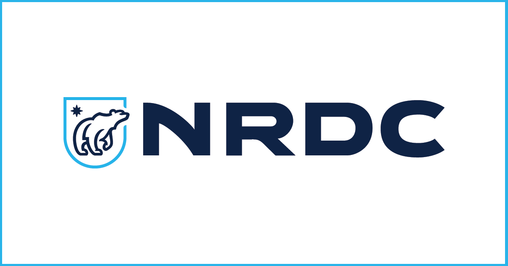

The NRDC (Natural Resources Defense Council) works to sustain the environment for the generations to come as it has for previous generations. The NRDC focuses on topics such as climate change, communities, energy, food, health, oceans, water, and the wild.